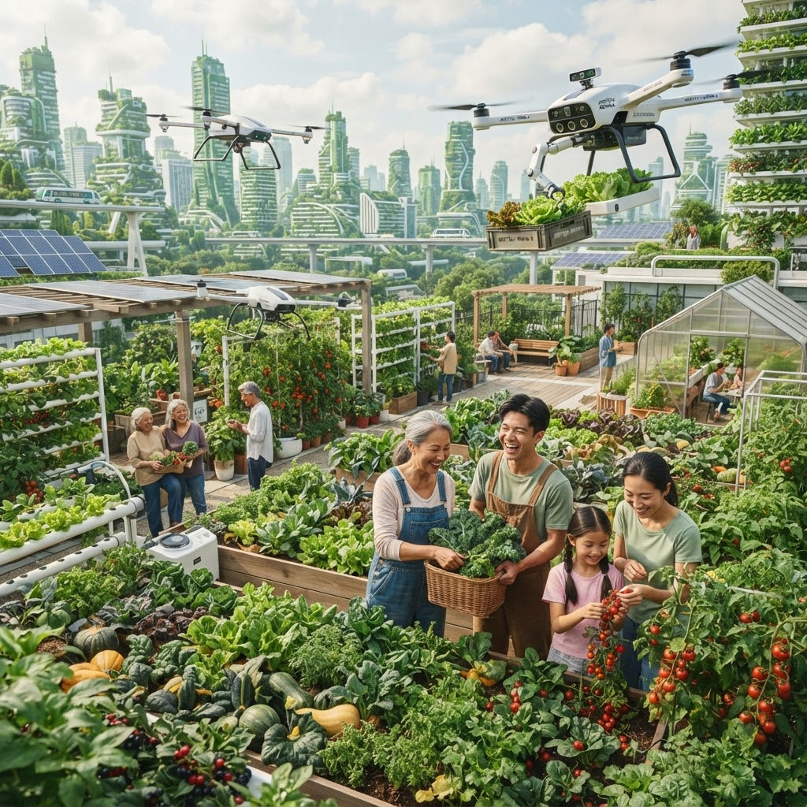

COLLECTIVE VITALITY
Your Digital Bio-Ecosystem
Welcome to the SOLIS Community Hub—where urban intelligence meets regenerative growth. Connect with local harvests, track regional energy health, and participate in the global transition.
